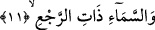
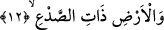

11. Dönüş sâhibi olan (yağmur yağdıran) göğe,
Bu âyette geçen “zat” sâhip anlamınadır. “Rac’” yağmur demektir. Yağmura “dönmek”
anlamına gelen “rac’” denmesi Arapların, bulutların yağmuru yeryüzündeki denizlerden
alıp getirdiklerini iddiâ etmelerinden dolayıdır. Arapların zannına göre bulutlar yağmur
sularını gidip denizlerden alarak tekrar gerisin geriye yeryüzüne taşımaktadırlar veya
yağmura “rac’” denmesi yağmurun tekrar geri dönüp gelmesi için bir tefaül/hayra yorma
kabilindendir. Bundan dolayı araplar yağmura “evb” de demişlerdir. Böyle demeleri
yağmurun tekrar dönüp yağmasını beklemelerinden dolayıdır. Bütün bu açıklamaların
sonucunda ortaya çıkıyorki “rac’” kelimesi geçişli değil, geçişsiz olarak dönmek fiilinin
masdarıdır. Nitekim bazı âlimler bu kanâattedirler.
Yağmur kelimesine “rac’” denmesinin bir üçüncü sebebi şu olabilir; Allah Teâlâ
bilindiği üzere yağmuru yaratıp zaman zaman geri getirmektedir. İşte bundan dolayı
yağmura bu isim verilmiş olabilir.
Rağıb Isfahânî’nin dediğine göre yağmura “rac’” denmesi havanın sudan almış
olduğu şeyi gerisin geriye bırakması dolayısıyladır.
Keşfu’l-esrar’da sebeb olarak şöyle bir gerekçe gösteriliyor: “Çünkü yağmur her yıl
geri gelir ve tekrar edip yağar.”
Abdul Kahir Cürcâni İ’câzü’l-Kur’an isimli kitabında şöyle diyor: Allah Teâlâ’nın
“Andolsun yağmurlu göğe” demesi göğün güneşinin ve ayının belli zamanlarda
doğmasından, batmasından bazı yıldızlarının tekrar gerisin geriye dönmesinden
dolayıdır.
12. (Nebat ile) yarılan yere yemin ederim ki,
İnsanların kabirlerinden çıkmaları misali yeryüzünün bitkilerle yarılması demek,
toprağın çatlaması, bitkilerin ve pınarların ortaya çıkması demektir. “Sad’”
kelimesinden maksad toprakta yetişen bitkilerdir. Bunlara bu ismin verilmesi bitkilerin
toprağı yarmalarından dolayıdır. Dolayısıyla yeryüzü bu bitkiler vâsıtasıyla yarılıp
çatlamaktadır. Sad’ sözlükte yarmak demektir.
Müfredat’ta ifâde edildiğine göre sad’; cam, demir vb. sert cisimlerde yarık açmak
demektir.
Bu âyet-i kerimede yağmurlu gökyüzünün baba gibi, bitkilerle donatılmış yeryüzünün
ana gibi ve o bitkilerin de evlat gibi olduklarına işâret vardır. Allah bu sûrede önce
birinci âyette “vessemâi” buyurarak herhangi bir niteleme yapmaksızın göğün üzerine